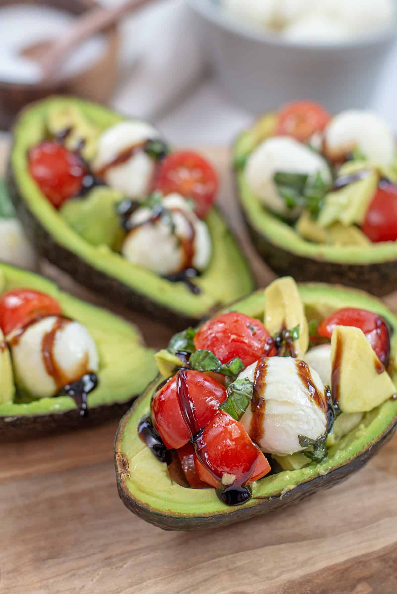

Lentil and Vegetable Curry

Description
A fresh and elegant dish combining creamy avocados with the classic flavors of a Caprese salad. Perfect as a light lunch or appetizer!
Ingredients
- 2 ripe avocados, halved and pitted
- 1 cup cherry tomatoes, halved
- 1/2 cup fresh mozzarella balls, halved
- 1/4 cup fresh basil leaves, chopped
- 1 tbsp balsamic glaze
- 1 tbsp olive oil
- Salt and pepper to taste
Steps
- Scoop out a little avocado flesh to create more space for the filling.
- In a bowl, mix cherry tomatoes, mozzarella, and basil.
- Drizzle with olive oil and season with salt and pepper.
- Spoon the mixture into the avocado halves.
- Drizzle with balsamic glaze before serving.
Index